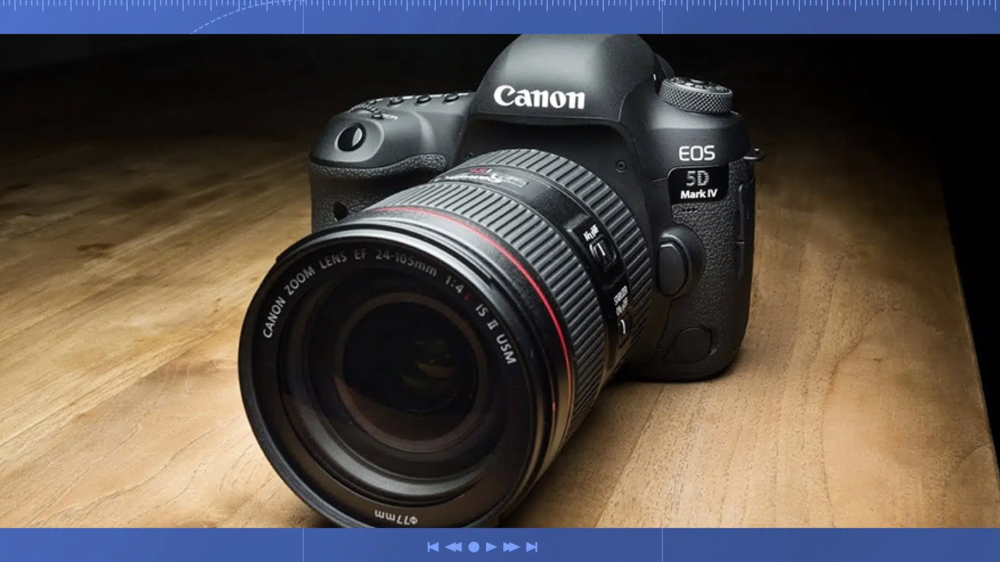

Canon включается в гонку кинокамер. Зарегистрированы две новые модели.
К концу мая Canon может представить новую модель полнокадрового беззеркального фотоаппарата — Canon EOS R5 Mark II. Одновременно должно быть объявлено о разработке флагмана — Canon EOS R1, который, по слухам, получит сенсор DGO.
Представлен комплект Canon EOS R50 для блогеров
Canon продолжает выпускать специализированные наборы для съемки видео. На этот раз компания представила бюджетный вариант: Canon EOS R50 Video Creator Kit. Комплект предназначен для видеоблогеров и включает в себя беззеркальную камеру, широкоугольный зум и штатив-монопод для съемки в режиме влога и более удобного хвата.

Canon назвали себя брендом №1 в сегменте беззеркальных камер в США
Компания Canon сообщила, что укрепила позицию бренда беззеркальных камер №1, а также стала брендом беззеркальных камер №1 в США по итогам прошедшего года. Соответствующее заявление было опубликовано на официальном сайте американского подразделения Canon.